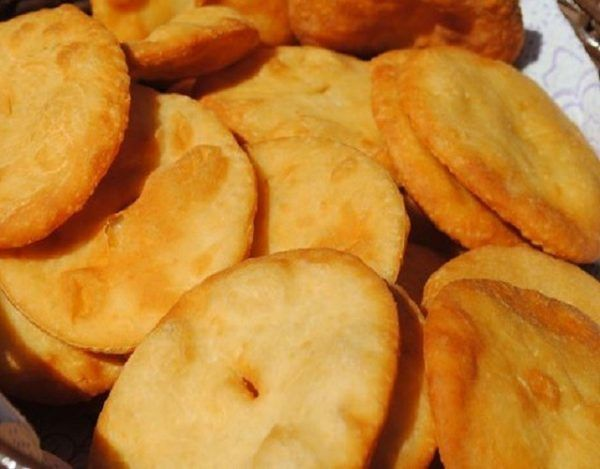

Receta de Torta Frita

Masa delgada de forma circular, con un hoyo en el centro, hecha con harina, aceite (puede no tener aceite) y agua, que se fríe en grasa vacuna y se consume sola o untada con diversos aderezos, tanto dulces como salados.
INGREDIENTES:
- 500 gramos harina
- 10 gramos (1 cucharada) levadura instantánea
- 2 cucharaditas sal
- 3 cucharadas grasa derretida (medir estando líquida)
- 270 ml agua tibia
- 1 cucharada azúcar
Procedimiento:
- Poner en un recipiente preferentemente plástico el agua tibia. No puede estar muy fría ni muy caliente porque eso altera el resultado. Al elegir el tamaño del recipiente, tener en cuenta que la levadura va a crecer. Agregar el azúcar y revolver.
- Incorporar la levadura instantánea al agua con azúcar, revolver y retirar la cuchara. Dejar en lugar cálido.
- Poner la harina en un recipiente e incorporar la sal y la leche en polvo (opcional). Mezclar bien.
- Hacer un hueco en el medio y poner a derretir la grasa.
- Una vez derretida la grasa, medir tres cucharadas no muy llenas y ponerlas en el hueco.
- Para entonces la levadura ya tiene que haber crecido un poco (dos dedos aproximadamente), así que la agregamos a la harina. Si no ha crecido esperamos a que lo haga.
- Mezclamos con una cuchara y a continuación unimos los ingredientes con la mano y continuamos amasando por unos minutos. La masa no puede quedar tan dura que sea difícil de amasar ni tan blanda que se pegue a las manos. Si es necesario se puede agregar otro poquito de agua tibia.
- Tomar un pequeño trozo de masa, hacerlo un bollo y luego aplastarlo, dándole forma de disco con las manos. Hacer lo mismo con toda la masa.
- Poner a calentar la grasa.
- Tomar el primer disco que se hizo (para dar tiempo a que los demás leuden) y estirarlo con el palote hasta que tenga aproximadamente medio centímetro de espesor, dándole forma circular. Repetir con el resto de los discos.
- Hacerle un orificio con el dedo en el medio del círculo.
- Probar si la grasa está caliente introduciendo una pequeña bolita de masa: si lo está, la grasa burbujeará y la bolita subirá inmediatamente.
- Introducir con cuidado la primera torta frita que estiramos.
- Esperar a que los bordes tomen color y dar vuelta.
- Cuando esté dorada retirar de la grasa y poner en una fuente forrada con varias capas de papel absorbente.
- Repetir con el resto de los círculos, cuidando de freírlos siempre en el mismo orden que fueron estirados.
- Pueden servirse solas, espolvoreadas con azúcar o con dulce de leche.
- Consejos: si la grasa humea mucho hay que bajar el fuego. Tratar de no pinchar las tortas al darlas vuelta porque puede entrarles grasa y quedarán enchumbadas.